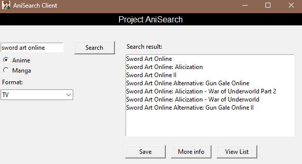
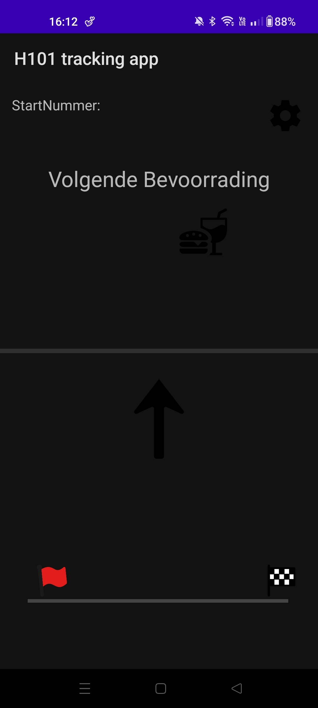

Development
Ik heb over de jaren heel wat kennis opgedaan met verschillende technologieen, applicaties en programmeertalen.
Python
De eerste taal die ik heb geleerd was Python. Ik begon met oefeningen te maken van Project Euler.
Dit zijn wiskundige oefeningen waar je met behulp van scripts de oplossing moet zoeken.
Toen ik voor mijn middelbaar diploma ging bij het volwassenenonderwijs heb ik als projectje een python-app gemaakt die in lijn met mijn interesses bepaalde anime en manga series kan opzoeken met achteliggend API requests van de website anilist.co
Project AniSearch
gemaakt in Python met Tkinter, SQLite en de AniList API
Android Studio
Project Hagelandse 101
Samen met de leerlingen en leraren van De Lift Education in Diest hebben we voor de Hagelandse 101-wandeling een appje ontwikkelt
die de progress van wandelaars bijhoudt met GPS-tracking.
Bij dit project kon ik kennis maken met Android development, een beetje back-end, en hoe je moet omgaan met gradle en verschillende libraries van Google.
Hier kan je de tracking-app vinden!
